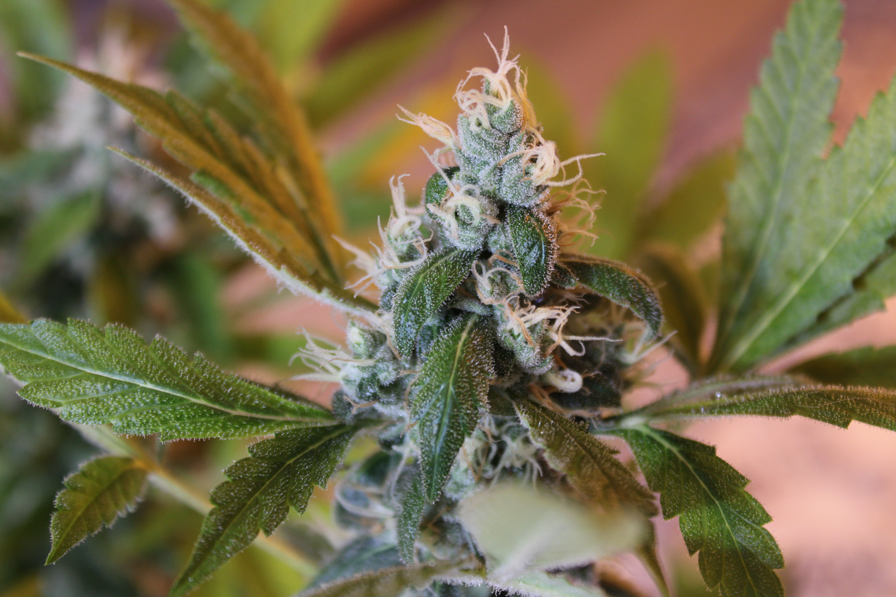
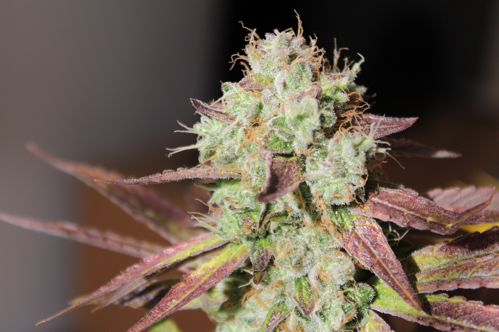
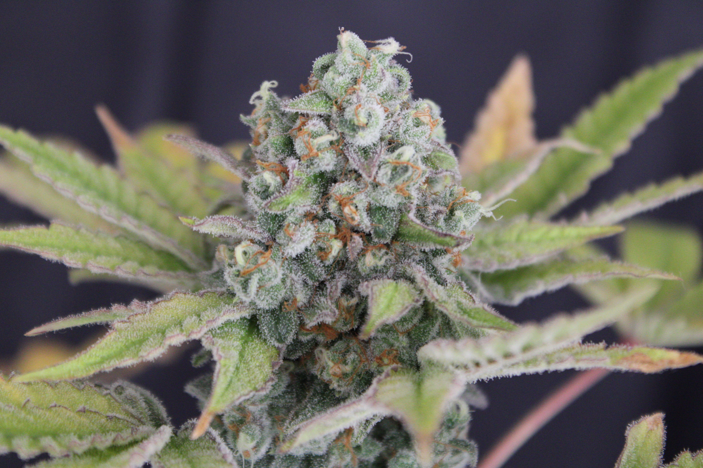
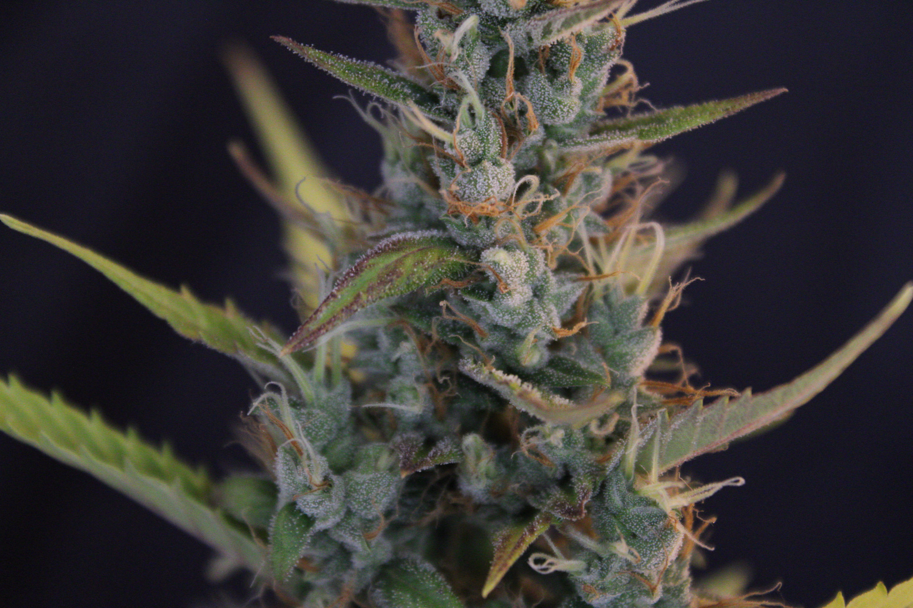

A
A
 B
B
The first
chapter.
The archive begins with a first documented grow centered on Hindu Kush. The original report is dated 9 August 2007 and marks the starting point of the long-running Grower.ch journal.
First Grow · Hindu Kush · Grower.ch ↗ A
A
 B
B
Second grow.
New ground.
The second documented grow follows with Mazar & Euforia. The report was opened by Baltazar on 3 February 2008 and continued the archive with a new combination of genetics.
Mazar & Euforia · Grower.ch ↗ A
A
 B
B
A new season.
Blueberry.
Blueberry becomes the third documented grow. The opening post is dated 30 March 2008 and continues the pattern of recording different genetics, observations and the progress of the run.
Blueberry · Grower.ch ↗ A
A
 B
B
Fourth grow.
Keep going.
On 9 July 2008 the archive moves into Jorge's Diamonds & Perplex. The report explicitly describes itself as the fourth grow and continues the increasingly detailed journal.
Jorge's Diamonds & Perplex · Grower.ch ↗ A
A
 B
B
More genetics.
More curiosity.
Blue Moonshine & Pure Afghan follows on 13 September 2008. The report describes another return to the journal format with several genetics brought together for comparison and observation.
Blue Moonshine & Pure Afghan · Grower.ch ↗ A
A
 B
B
The archive
keeps moving.
The next documented chapter opens on 7 March 2009 with Chocolope, G13 Haze and Hawaiian Snow. The author describes this one as a more focused grow protocol and keeps the documentation intentionally concise.
Chocolope, G13 Haze & Hawaiian Snow · Grower.ch ↗
A B
B
Back after
more than ten years.
After more than a decade away, the documented archive returns. The new project starts with an unpredictable seed mix and the simple idea of following what actually emerges rather than forcing a predetermined result.
Strainmix Part One · Grower.ch ↗
A B
B
A box full of
questions.
Seeds accumulated over several years meet named varieties such as Gelato, Cali Orange and Purple Tangie. The uncertainty itself becomes part of the documented experiment.
Strainmix Part One · Grower.ch ↗
A B
B
It didn't start
smoothly.
The first attempt does not go according to plan. Only a few plants emerge at first and the report turns those early problems into part of the story rather than hiding them.
Strainmix Part One · Grower.ch ↗
A B
B
Let the plants
show themselves.
As the number of plants grows, selection becomes unavoidable. One unusual plant even becomes part of the Zwergenbattle 2025 story as a distinctive trifoliate.
Strainmix Part One · Grower.ch ↗ A
A
 B
B
The mix
gets serious.
Part Two expands the documented project into a much larger run. The archive follows the development, setbacks and changing structure instead of presenting only a polished final result.
Strainmix Part Two · Grower.ch ↗ A
A
 B
B
More structure.
More character.
The project evolves again under the name Hell Kitchen. The report becomes another chapter in the archive and shows how the documentation itself has become part of the project.
Baltazars Hell Kitchen · Grower.ch ↗ A
A
 B
B
The story
continues.
Part Three returns to the central idea: follow the genetics, preserve the development and keep the tradition alive. Seeds from the previous run return to the mix and phenotype hunting continues.
Strain Mix Part Three · Grower.ch ↗ A
A
 B
B
Not a finished
story.
From the first documented grow in 2007 through the later Strainmix chapters, the archive is a continuous record of curiosity, experimentation and changing genetics. The thread stays open because the project does.
Baltazar Seeds · documented archive ↗